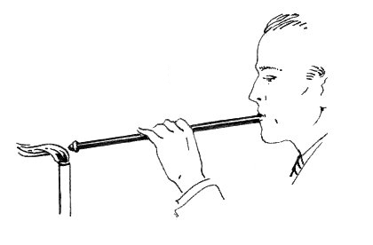
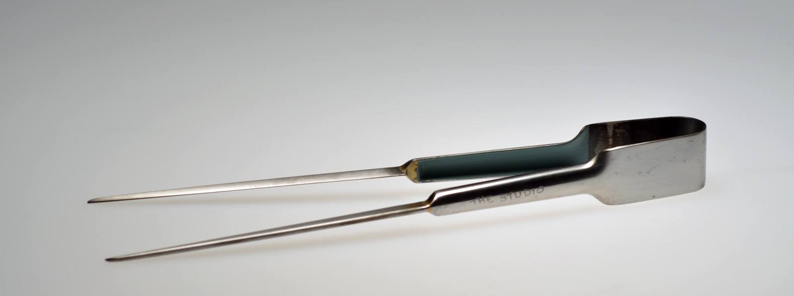
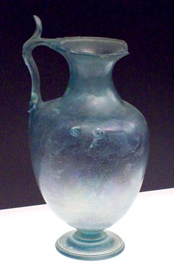
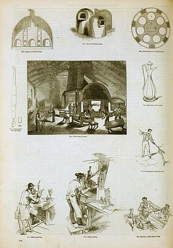

C. Matthew Szösz
Pushing the possibilities of the medium with methods that span history, American designer C. Matthew Szösz creates a glass basket—first making glass fiber with a 19th-century ropemaking machine and then weaving it into basket form and firing it over a refractory core. Curator Silbert delights in the work, saying it “scratches the itch of any glass enthusiast eager to see the material stretched to its technical and aesthetic limits.”
Juli Bolaños-Durman
Using both found and blown glass, Costa Rican artist Juli Bolaños-Durman invents sculptures that evoke the playfulness of Postmodernism while emphasizing the historical canon of the medium through physical fragments.
Nickolaus Fruin
In a chemical feat that produces swirling patterns, U.S.-based artist Nickolaus Fruin uses traditional techniques to combine two kinds of clear blown glass: his own invented mix and a common soda-lime one used for everything from windowpanes to drinking glasses. Because they have different refractive indexes, the twisting cane appears subtly inside the layers.
Tools
The major tools used by a glassblower are the blowpipe (or blow tube), punty (or punty rod, pontil, or mandrel), bench, marver, blocks, jacks, paddles, tweezers, newspaper pads, and a variety of shears.
Blowpipe The tip of the blowpipe is first preheated; then dipped in the molten glass in the furnace. The molten glass is "gathered" onto the end of the blowpipe in much the same way that viscous honey is picked up on a honey dipper. This glass is then rolled on the marver, which was traditionally a flat slab of marble, but today is more commonly a fairly thick flat sheet of steel. This process, called "marvering",[17] forms a cool skin on the exterior of the molten glass blob, and shapes it. Then air is blown into the pipe, creating a bubble. Next, the glassworker can gather more glass over that bubble to create a larger piece. Once a piece has been blown to its approximate final size, the bottom is finalized. Then, the molten glass is attached to a stainless steel or iron rod called a "punty" for shaping and transferring the hollow piece from the blowpipe to provide an opening and to finalize the top.
Blocks Blocks are ladle-like tools made from water-soaked fruitwood, and are used similarly to the marver to shape and cool a piece in the early steps of creation. In similar fashion, pads of water-soaked newspaper (roughly 15 cm (6 in) square, 1.3 to 2.5 centimetres (0.5 to 1 in) thick), held in the bare hand, can be used to shape the piece.
Bench The bench is a glassblower's workstation; it includes places for the glassblower to sit, for the handheld tools, and two rails that the pipe or punty rides on while the blower works with the piece.
Jacks Jacks are tools shaped somewhat like large tweezers with two blades, which are used for forming shape later in the creation of a piece.Paddles are flat pieces of wood or graphite used for creating flat spots such as a bottom. Tweezers are used to pick out details or to pull on the glass. There are two important types of shears, straight shears and diamond shears. Straight shears are essentially bulky scissors, used for making linear cuts. Diamond shears have blades that form a diamond shape when partially open. These are used for cutting off masses of glass.
History
Earliest evidence Glassblowing was invented by Syrian craftsmen from Sidon and Babylon between 27 BC and 14 AD. The ancient Romans copied the technique consisting of blowing air into molten glass with a blowpipe making it into a bubble. Hence, tube blowing not only represents the initial attempts of experimentation by glassworkers at blowing glass, it is also a revolutionary step that induced a change in conception and a deep understanding of glass. Such inventions swiftly eclipsed all other traditional methods, such as casting and core-forming, in working glass. Read More...
Roman Empire The invention of glassblowing coincided with the establishment of the Roman Empire in the 1st century BC, which enhanced the spread and dominance of this new technology. Glassblowing was greatly supported by the Roman government (although Roman citizens could not be "in trade", in particular under the reign of Augustus), and glass was being blown in many areas of the Roman world. On the eastern borders of the Empire, the first large glass workshops were set up by the Phoenicians in the birthplace of glassblowing in contemporary Lebanon and Israel as well as in the neighbouring province of Cyprus Read More...
Middle Ages The glass blowing tradition was carried on in Europe from the medieval period through the Middle Ages to the Renaissance in the demise of the Roman Empire in the 5th century AD. During the early medieval period, the Franks manipulated the technique of glassblowing by creating the simple corrugated molds and developing the claws decoration techniques. Blown glass objects, such as the drinking vessels that imitated the shape of the animal horn were produced in the Rhine and Meuse valleys, as well as in Belgium. The Byzantine glassworkers made mold-blown glass decorated with Christian and Jewish symbols in Jerusalem between the late 6th century and the middle of the 7th century AD. Mold-blown vessels with facets, relief and linear-cut decoration were discovered at Samarra in the Islamic lands. Read More...
Recent developments The "studio glass movement" began in 1962 when Harvey Littleton, a ceramics professor, and Dominick Labino, a chemist and engineer, held two workshops at the Toledo Museum of Art, during which they started experimenting with melting glass in a small furnace and creating blown glass art. Littleton promoted the use of small furnaces in individual artists studios.This approach to glassblowing blossomed into a worldwide movement, producing such flamboyant and prolific artists as Dale Chihuly, Dante Marioni, Fritz Driesbach and Marvin Lipofsky as well as scores of other modern glass artists. Today there are many different institutions around the world that offer glassmaking resources for training and sharing equipment. Read More...